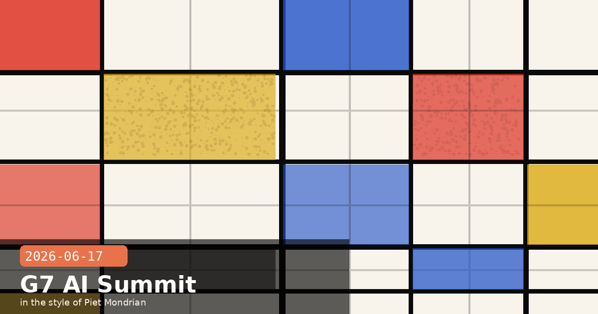

Amodei at G7, Recursive Self-Improvement Research & Agentic Coding Economics

🧭 Dario Amodei Briefs G7 Leaders in Evian on Mandatory AI Testing and Deployment Authority
On June 17, Dario Amodei joined Sam Altman (OpenAI) and Demis Hassabis (Google DeepMind) at the G7 Leaders' Summit in Evian, France — the first time the heads of all three frontier AI labs have appeared together before sitting heads of government. France holds the 2026 G7 presidency. The AI session lasted approximately 90 minutes and produced a concrete draft commitment: G7 nations will pursue a shared framework for pre-deployment capability evaluation of frontier models, with particular focus on biosecurity, autonomous cyber operations, and persuasion-at-scale risks.
What Amodei proposed
Amodei's ask of the G7 was more specific than a general call for "AI governance." He pressed for three concrete mechanisms:
Mandatory third-party capability testing before any frontier model is deployed commercially — analogous to the FAA's airworthiness certification for commercial aircraft. Testing to cover at minimum: biosecurity uplift, autonomous cyberattack capability, and large-scale persuasion effectiveness.
Statutory government authority to block or pause deployments that exceed agreed capability thresholds, without relying on voluntary commitments from labs. Amodei cited the June 12 export control directive suspending Fable 5 as evidence that ad hoc discretionary authority is already being exercised — the question is whether it should be formalised into a predictable rule-based system.
International coordination on compute thresholds — specifically proposing that nations align on a common definition of what constitutes a "frontier training run" (in FLOPs) so that thresholds applied in one jurisdiction cannot be trivially circumvented by training in another.
Why this matters for developers building on Claude
If the G7 framework advances, the most likely near-term effect on Claude API users is increased compliance documentation requirements for applications classified as high-risk — particularly in healthcare, finance, and infrastructure. Anthropic has consistently supported rule-based governance over ad hoc controls, partly because predictable rules are easier to build compliant products around than unpredictable executive discretion. Developers whose products touch regulated industries should monitor the G7 communiqué language closely; the draft circulating as of June 17 used the phrase "risk-tiered deployment authorisation," which suggests a tiered scheme rather than a single threshold.
The export control context
Amodei used the Fable 5 export control suspension (announced June 12) as a case study in the session, arguing that the current approach — where a narrow identified vulnerability triggers a sweeping suspension affecting all international users — is disproportionate compared to what a properly constituted technical agency could achieve through targeted capability restrictions. His framing: the export control was not wrong in spirit, but it was applied with too broad a brush because no targeted alternative existed. The G7 framework he proposed would create that alternative.
🧭 Anthropic Institute: When Recursive Self-Improvement Becomes Real — and What Governance Needs to Exist Before It Does
The Anthropic Institute published a long-form research paper today examining the near-term trajectory toward AI systems capable of autonomously designing their own successors — what the field calls recursive self-improvement. The paper is empirically grounded: it draws on internal Anthropic data showing that Claude now authors more than 80% of the code merged into Anthropic's own production codebase, with typical engineers merging approximately 8× as much code per day as they did in 2024.
The core finding: the trajectory is faster than institutions expected
The paper traces the progression from "Claude helps write code" (2024) to "Claude designs most of the system" (mid-2026) and models the continuation of that curve. The key conclusion is not that recursive self-improvement is imminent — it is that the institutional infrastructure required to govern it safely takes years to build, and that building it needs to begin before the capability exists, not after.
One concrete data point from the paper: in April 2026, Claude autonomously identified and fixed over 800 instances of a specific class of API error — work that Anthropic engineers estimated would have taken a human team approximately four years to complete at the same quality and coverage. This is not recursive self-improvement, but it is the first example the paper points to of Claude performing architectural improvement of the systems Claude itself runs on at a scale and speed that human engineers could not match.
The three governance prerequisites the paper identifies
Interpretability sufficient to audit goal structures — the ability to verify that an AI system designing its successor is optimising for the goals it was trained on, not goals that have drifted during extended deployment. The paper rates current interpretability tools at roughly 30% of what would be needed for this.
External oversight of training runs above a capability threshold — a technical agency with statutory authority to review training configurations before they begin, analogous to how drug trials require IRB approval before they start. The paper argues the G7 framework (separately announced today) is a necessary but not sufficient step.
Staged deployment with mandatory capability re-evaluation — the principle that a model that has significantly improved its own code should be treated as a new model for governance purposes, requiring a fresh round of capability evaluation before continued deployment.
What this means for Claude API developers right now
The paper explicitly addresses the current developer ecosystem. Its recommendation: if you are building systems that allow Claude to modify or generate the code that your system runs on (i.e., self-modifying agent architectures), you should treat the human review step in that loop as a governance requirement, not merely a reliability concern. The specific pattern to avoid is "update-and-deploy" loops where Claude-generated code is automatically deployed without a human reviewing the diff — even if the code passes automated tests. The paper calls this the "deployment gate" and argues it should be the last line of human oversight to be automated away, not one of the first.
🧭 Agentic Coding and Persistent Returns to Expertise: Anthropic's Economic Research Paper
Anthropic published an economic research paper — "Agentic Coding and Persistent Returns to Expertise" — analysing approximately 400,000 Claude Code sessions conducted between October 2025 and April 2026. The central finding inverts a common assumption: rather than AI making expertise less valuable by democratising capability, the data shows that users with greater domain expertise extract significantly more value per Claude Code session than novice users. The returns to expertise are persistent and growing, not diminishing.
Key findings
Expertise multiplier: A developer with 10+ years of relevant domain experience gets approximately 3.2× more measurable output per Claude Code session than a developer with under two years of experience — measured by lines of verified, merged code per hour of Claude interaction.
Usage intensity: Claude Code users in the study average 20 hours per week on the tool — substantially higher than prior estimates based on API call volumes, because many interactions happen within long multi-turn sessions that appear as one billing event.
Adoption acceleration: The share of active GitHub projects with at least one Claude Code-generated commit has more than doubled since October 2025, crossing 40% of the sample by April 2026.
Cross-occupation success: High success rates appear across many occupations, not just software engineers — data scientists, infrastructure engineers, technical writers, and security researchers all show strong output gains.
Why expertise still wins
The paper's explanation for the expertise multiplier is intuitive once stated: experts decompose problems more precisely before handing them to Claude, catch errors faster, and know when Claude's output is subtly wrong in ways that would only surface in production. The practical implication is the opposite of what many people expect — investing in your own domain knowledge while using Claude Code is not redundant; it is the highest-leverage use of your time, because it directly amplifies what you get out of every session.
The "20 hours per week" figure deserves scrutiny — here's how to read it
The 20 hours/week figure is for active Claude Code users, not all Claude users. It is also calculated from session time (cursor idle for less than 30 minutes = same session), which inflates the number relative to "time actively prompting." A more actionable reading: heavy Claude Code users spend roughly half their working day in Claude Code sessions, with most of that time reviewing Claude's output and deciding what to accept, modify, or reject. The skill being exercised most heavily is not prompting — it is rapid code review and correctness judgement. If you want to get more from Claude Code, the thing to practice is faster, more accurate review of generated code, not more sophisticated prompting.